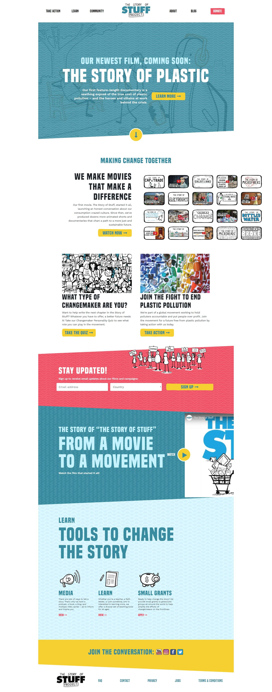
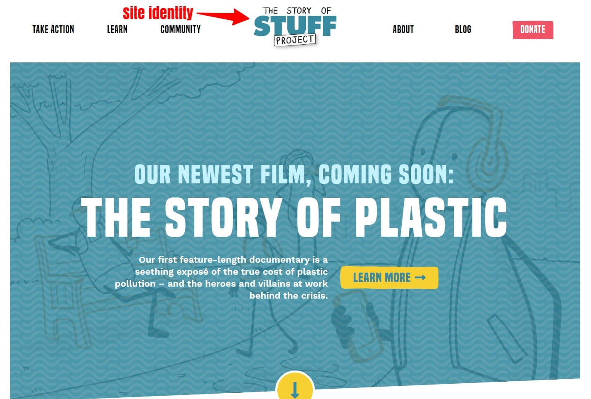
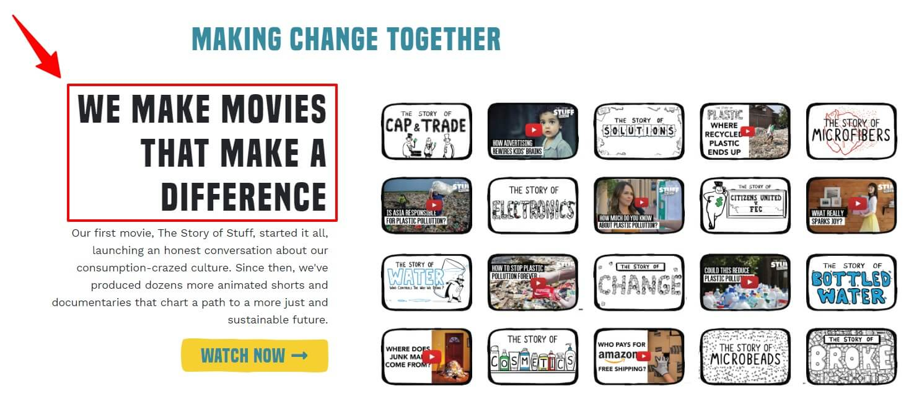
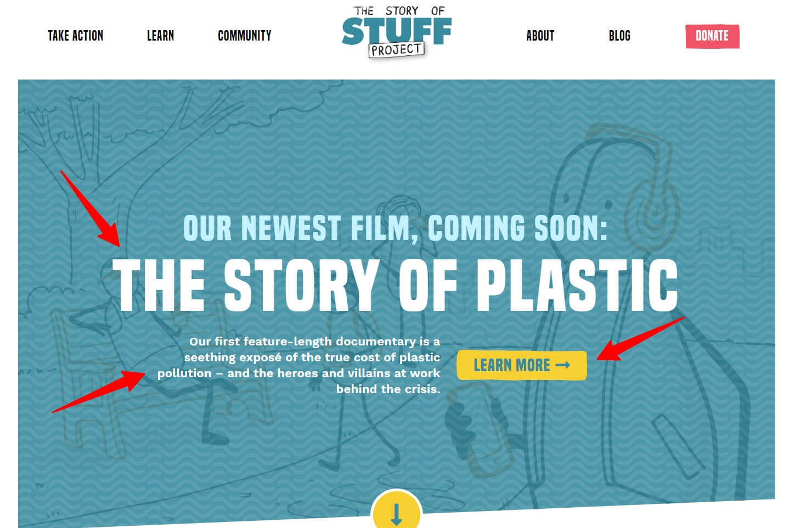
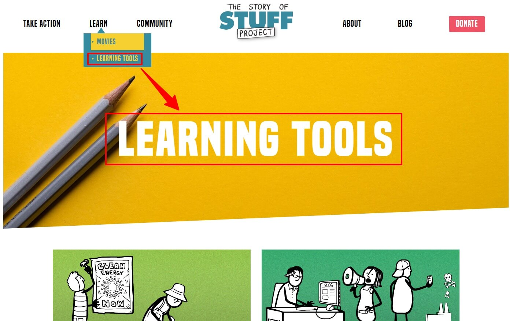
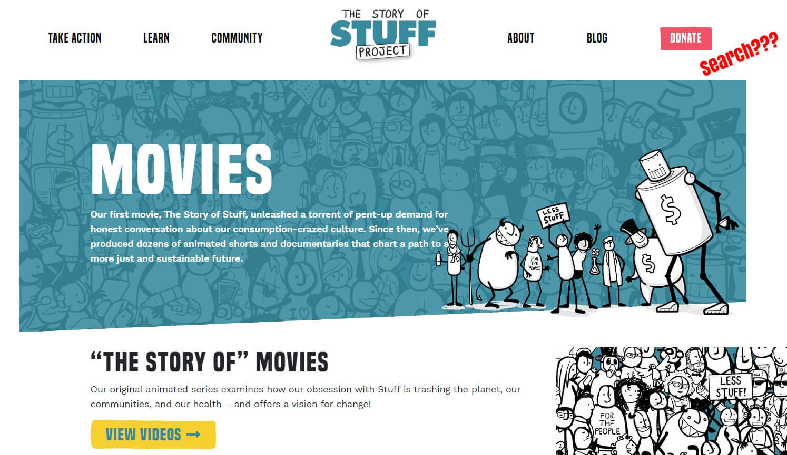

With Earth Day quickly approaching, there's no better time than right now to head over to The Story of Stuff Project's (TSSP) website at: www.storyofstuff.org for inspiration on how we can all pitch in to support environmental protection. The Story of Stuff Project is a nonprofit organization with the mission to tell stories and inspire action in "how our Stuff is extracted, produced, distributed, consumed, and disposed of."
 The Story of Us HomepageIn addition to fostering my appreciation for what the folks at The Story of Stuff Project are up to, I also wanted to analyze the website for its usable design. The principles for a well designed site are based on a wide range of sources.
For this post, I will base my observations on the following:
- What is this site?
- Why should I be here?
- What page am I on?
- How can I search?
What is this site?
As soon as people enter a site, it needs to be clear what that site is and what it's for.
Site ID
One way to let people know where they are is with the Site ID or logo. TSSP's logo is placed in the middle of the primary navigation across the top of the page, which falls in line with where most people expect to see it.
 The Story of Stuff Project Site IDMission
Right off the bat, it's not immediately clear what the purpose of the site is. Scroll down a little though and you can see that TSSP makes "movies that make a difference". Still not 100% clear with that observation alone but scroll a little further and you can see a few posts titled What Type of Changemaker Are You? and Join the Fight to End Plastic Pollution.
 The Story of Stuff Project "We Make Movies That Make a Difference".What Works and What Doesn't
With the Site ID and the post content on the homepage, I think TSSP does a really good job at letting people know what the site is and what it's about. Without immediately heading over to the About page, it only takes a few seconds to get an idea of what TSSP's mission is. That being said, it could be even easier though. Many websites include a tagline right next to the Site ID. A tagline can quickly get a message across to convey what the site is about.
Why should I be here?
The site's purpose should give people a reason to be there, address their needs and be relevant to what they're doing. On Earth Day this year, April 22nd, TSSP is televising their documentary on plastic pollution, The Story of Plastic. My purpose for visiting the site was to find details on where and when I can watch it. In that context, I found the content on the site to be extremely useful and valuable.
 The Story of Stuff Project "We Make Movies that Make a Difference"What Works and What Doesn't
With the upcoming release of The Story of Plastic, it's probably safe to say that TSSP made the right call in anticipating that more people would visit the site and thus, dedicated a lot of real estate to highlight the film. My only real issue with finding the viewing details was that I had to click around a few times and almost overlooked it because the details weren't very visually obvious. Formatting this to support skimming would have been nice.
What page am I on?
A well designed navigation can allow people to find what they're looking for without needless clicks.
Navigating the Site
Understanding how to navigate the TSSP site is really easy. The headings and subheadings are grouped appropriately. Clicking on a subheading opens a new page and the clear bold page names make it obvious where you are on the site.
 The Story of Stuff Project Site IdentityWhat Works and What Doesn't
I found that the bright colors and bold sizing of the headings, subheadings, and page names really made them stand out. It was easy to find my way around the site initially but as I veered further away from the main content, I found that I could easily lose my bearings. The site doesn't make use of breadcrumbs to show hierarchy so if I wanted to go back a few pages, I would have to click the back button. The navigation also doesn't show more than the secondary level of subheadings so unless I find what I'm looking for there, I'd have to do some clicking around.
How can I search?
Many people will look for a search box as soon as they enter a site. It's usually a simple box with a button and can either have the word "search" next to it or a little magnifying glass icon. The search feature was not an option on the TSSP site.
 The Story of Stuff ProjectWhat Works and What Doesn't
The website did a lot of things right but not having a search box can be quite inconvenient. Eventually, people will leave if they can't find what they're looking for. If I could only make one suggestion for this site, it would be to add a search function.
Images from The Story of Stuff Project and PhotoMIX Ltd. from Pexels.